Chapter 01: Data Visualization
1 Introduction
- Our brain is more accustomed to processing visual stimuli and to recognizing patterns in graphs than to finding patterns in tables with columns of numbers.
Experiment: Try to describe the data either using the table or the graph. Which takes more effort?
The graphs organize data points in logical order onto a common scale and converts their numbers into information.
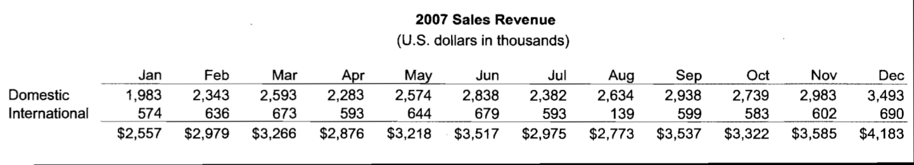

Note: Common scale for both variables helps comparison.
1.1 Minard’s Famous Visualization
Minard’s depiction of the demise of Napoleon’s Grand Army in the Russian campaign June 23, 1812 to December 1812. An army of 422,000 left but only 10,000 returned.
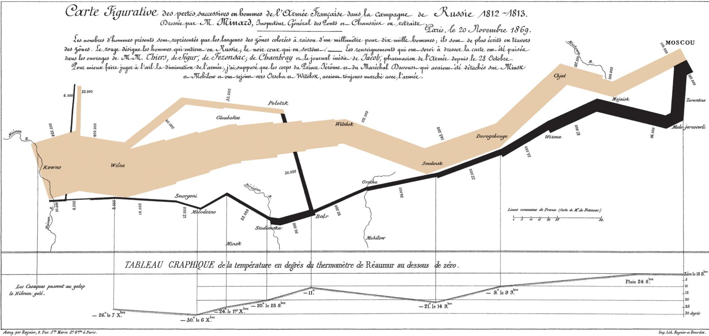
See also the R script MinardTroops.R (generates separate plot-window). Note that the package HistData comprises of several historically interesting data sets.
1.2 The Role of Graphics in Information Processing
Modern data graphics can do much more than simply substitute for small statistical tables. At their best, graphics are instruments for reasoning about quantitative information. Often the most effective way to describe, explore, and summarize a set of numbers – even a very large set – is to look at pictures of those numbers. Furthermore, of all methods for analyzing and communicating statistical information, well-designed data graphics are usually the simplest and at the same time the most powerful.
From the Introduction to Edward R. Tufte, 1983. The Visual Display of Quantitative Information. Graphics Press
1.2.1 John Tukey Quotes
- It is better to have a fuzzy answer to right questions than a precise answer to the wrong question.
- The nice thing about being a statistician is that I can play in everybody’s backyard.
Note: The progressing focus of GISciences from spatial data handling to geo-spatial data analytics.
Caution: Sometimes our visual perception of patterns may be tricked by illusions happening in our brains: Face or vase?
1.3 Visual Illusions
Static circles appear to rotate:
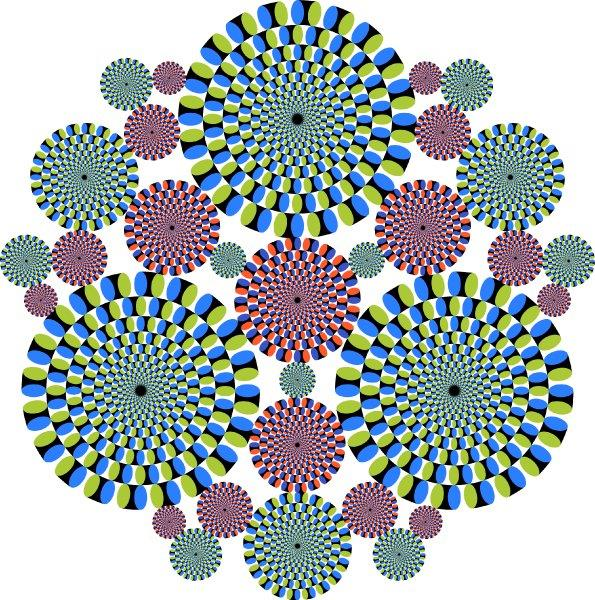
Modern computer software supports the visual exploration of data and finding the most communicative way of presenting the information hidden within our data to gain meaningful knowledge about the underlying process that has generated our data.
1.4 Grammar of Graphics and Color
The science of semiology (study of how signs and symbols are cognitively processed) has developed a grammar of graphics1. These rules have been implemented in R’s library
ggplot2for generating statistical graphs.Color can be a powerful graphical tool (see http://colorbrewer2.org/) if your output medium permits its use.
For choropleth map (coloring a set of regions) one distinguishes between:
- [a] categorical map themes
- [b] gradient continuous map themes
- [c] bi-polar or diverging map themes with a natural break point
 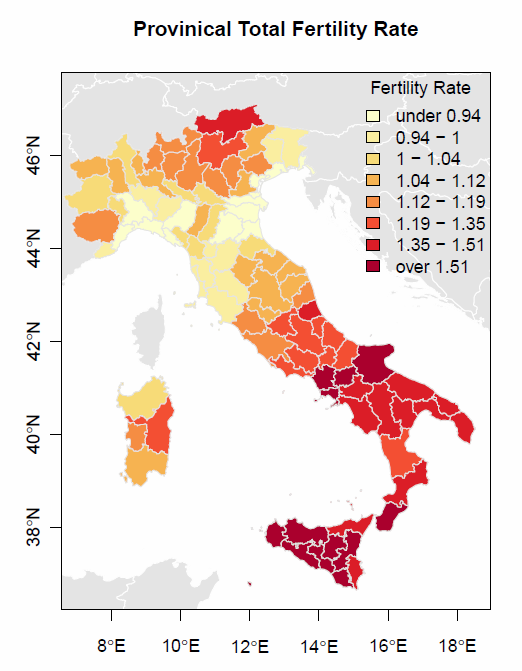
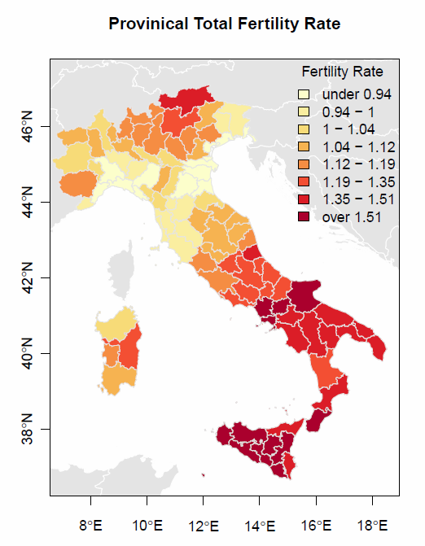 
1.4.1 Notes on Map Variables
Fertility rate refers to the number of children born per woman. Approximately, for industrialized countries, 2.1 children per woman are needed to maintain a stable nationally population count.
The variable \(\log \left(\frac{TotalInFlow}{TotalOutFlow}\right)\) measures whether a province is gaining or losing population due to internal migration within the 95 provinces of Italy:
\[\log \left(\frac{TotalInFlow}{TotalOutFlow}\right) = \begin{cases} < 0 & \text{population loss} \\ \approx 0 & \text{stable population} \\ > 0 & \text{population gain} \end{cases}\]
- See the R script
MapTX.Rfor example maps of the TX counties.
1.4.2 Color Blindness
Note: Approximately 12% of the population – males predominantly – are colorblind (mainly unable to distinguish between red and green).

- Normal Color Vision: 25, 29, 45, 56, 6, 8
- Red-Green Color Blind: 25, spots, spots, 56, spots, spots
2 Frequency Distribution and Histogram
- Histograms are used to summarize the distribution of metrically scaled variables. They display how frequently the observations in a data set will be within a particular range of values.
2.1 What Does the Distribution Tell Us?
Reasonable value range.
It gives an indication of the most frequent values.
It gives an indication of the degree of spread and central location(s) of the distribution.
It points to unusual observations with respect to the remaining sample observation.
Since histograms are based on the aggregation of observations within given intervals, information will be lost. Original data values within an interval are substituted by the interval midpoint.
A frequency table is a numerical list which underlies a histogram.
2.1.1 Example: Frequency Table
> freqTable(reactFreq)
startPoint endPoint midPoint freq
1 0.50 0.75 0.625 7
2 0.75 1.00 0.875 57
3 1.00 1.25 1.125 132
4 1.25 1.50 1.375 92
5 1.50 1.75 1.625 125
6 1.75 2.00 1.875 61
7 2.00 2.25 2.125 50
8 2.25 2.50 2.375 17
9 2.50 2.75 2.625 25
10 2.75 3.00 2.875 11
11 3.00 3.25 3.125 5
12 3.25 3.50 3.375 8
13 3.50 3.75 3.625 1
14 3.75 4.00 3.875 4
15 4.00 4.25 4.125 3
16 4.25 4.50 4.375 2
17 4.50 4.75 4.625 0
18 4.75 5.00 4.875 0Reaction Time Density (in seconds)

Note: The histogram does not show the absolute frequencies but their proportional densities:
\[density_i = \frac{frequency_i}{\sum_{j=1}^{number\ of\ classes} frequency_j}\]
2.2 Construction Guidelines for Class Intervals
The intervals cover the whole support of the data, they do not overlap, and they do not exhibit gaps.
The intervals are on the x-axis and the frequencies (either counts or relative frequencies) are on the y-axis.
Select the appropriate number of interval classes.
Selection of inappropriate number of classes:
- If the number of classes is too small it can mask critical characteristics of an underlying distribution.
- If the number of classes is too large typical data clusters become diluted.
Respect natural breaks, such as zero degrees Celsius or a ph-level of 7.
In general, the interval width needs to be constant. This allows proper comparison of the frequencies among classes.

2.2.1 Additional Guidelines
- Don’t make the error shown below (fortunately the histogram functions protect us from doing these mistakes):
 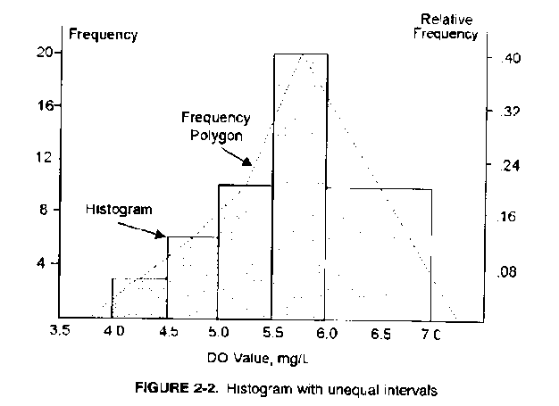
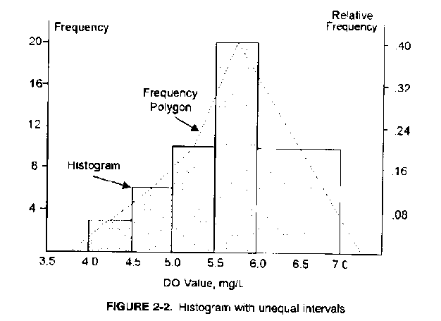
In general, use the smallest and largest of the observation as lower and upper bound.
If there are a few far outlying observations it is advisable to plot first all data simultaneously and then zoom in a second graph into the bulk of the observations to gain a better visual resolution.
If more than one histogram of the same data (e.g., city A and city B) is plotted side-by-side use a common classification scale.
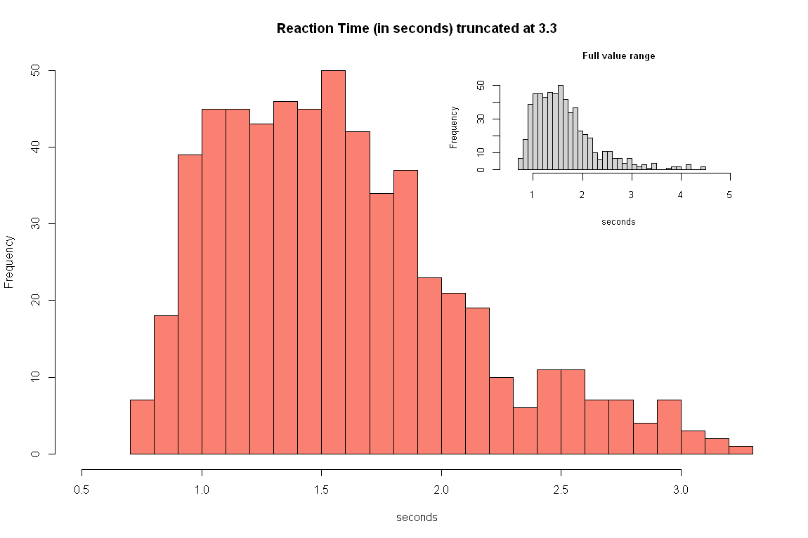
3 Bar/Pie Charts
- Bar charts plot the frequency or other summary statistics (y-axis) against the representation of categorical variables (x-axis).

Warning: Make sure to properly scale the y-axis to highlight differences in the counts or summary statistic.
Since the order of categories is irrelevant it is good practice to first display the most frequent category first, then the next frequent category and so forth.
I am not a big fan of pie charts. They do not communicate the information in a professional manner. However, sometimes for efficient comparison purposes, they are quite useful. In particular, since their size can also be varied in a meaningful way.
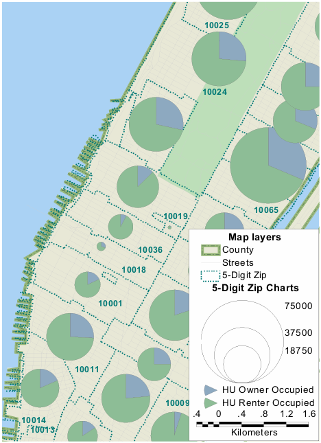
3.1 Bubble Plots
For bubble plots the circle area \(area = \pi \cdot radius^2\), for instance, the population count, needs to be proportional to radius. Thus:
\[radius = \sqrt{\frac{area}{\pi}}\]
See the R-script BUBBLEPLOT.R from the website http://www.flowingdata.com (visit the webpage for inspirations).

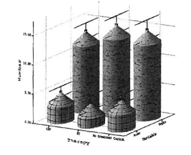
3.1.1 Avoid 3D Charts
If information can be displayed 2-dimensional, do so.
Three-dimensional charts frequently distract from the underlying information in a graph:
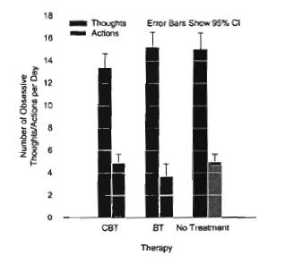
4 Side-by-Side Histograms
- Side-by-side graphs break observations apart by a categorical variable. They are histograms rotated by 90 degrees.
Example: Selected Texas counties’ population pyramids
 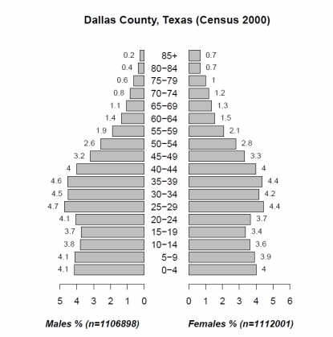
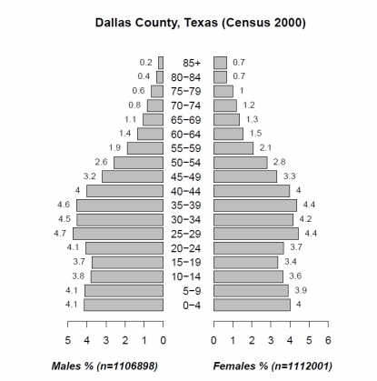 
| County Type | Description |
|---|---|
| Collin County | empty nesters |
| Dallas County | balanced |
| Llano County | retirees |


| County Type | Description |
|---|---|
| Starr County | TX-Mexico border Hispanics |
| Concho County | male detention center |
| Brazos County | Texas A&M University |
Note: common scale is used for males and females and relative frequencies are used.
5 The Shape of Distributions
Distributions can be distinguished with regards the balance of their left and right tails:
Symmetric distributions. Tails are balanced into either direction from a central value.
Negatively skewed distributions (long tail into the direction of small values)
Positively skewed distributions (long tail into the direction of large values). These distributions frequently emerge for variables with a binding lower origin (like zero income).
Skewness refers to a longer tail in one direction and a concentrated distribution in the other direction.
Extreme skewness may hint at outliers that do not match the rest of the observed data. \(\Rightarrow\) A different data generating process may have generated different observations.

Figure 3.9: Shapes of frequency distributions: (a) Normal; (b) Bimodal; (c) Negatively skewed; (d) Positively skewed
5.1 Modality
The number of meaningful clusters of observations is described by the term modality:
- Uni-modality refers to just one peak
- Bi-modality refers to two outstanding peaks. It may hint at a heterogeneous population.
- Multimodality refers to more than two outstanding peaks.
6 Quantiles and Percentiles
- Technically, quantiles and percentiles are generated from a sorted list of the original data points:
\[x_{[1]} \leq x_{[2]} \leq x_{[3]} \leq \cdots \leq x_{[n-1]} \leq x_{[n]}\]
where each observation has an assigned rank \(i \in \{1, 2, \ldots, n\}\), with \(i = 1\) for the smallest observation and \(i = n\) for the largest observation.
6.1 Example: order() Function in R
See R-script QuantileDemo.r:
> (data.frame(x, idx, x[idx]))
x idx x.idx.
1 4.0 4 2.5
2 4.4 5 3.1
3 3.8 3 3.8
4 2.5 9 3.9
5 3.1 1 4.0
6 4.3 12 4.1
7 5.1 6 4.3
8 4.6 2 4.4
9 3.9 11 4.4
10 4.8 8 4.6
11 4.4 10 4.8
12 4.1 7 5.1
6.2 Percentile Calculation
For a given data value \(x_{[i]}\) the percentile measures the proportion of sample observations less or equal to \(x_{[i]}\). The rank \(i\) and the number of observations \(n\) are used for their calculation.
In its general form a percentile is calculated as:
\[p(x_{[i]}) = \frac{i - \alpha}{n + (1 - \alpha) - \alpha}\]
where \(x_{[i]}\) is the \(i\)-th sorted data value with \(0 \leq \alpha \leq 1\).
6.2.1 Special Cases for \(\alpha\)
A value of \(\alpha = 0.0\) gives \(p(x_{[i]}) = \frac{i}{n+1}\) with \(p \in \left[\frac{1}{n+1}, \frac{n}{n+1}\right]\).
A value of \(\alpha = 0.5\) gives \(p(x_{[i]}) = \frac{i - 0.5}{n}\) with \(p \in \left[\frac{0.5}{n}, \frac{n-0.5}{n}\right]\).
A value of \(\alpha = 1.0\) gives \(p(x_{[i]}) = \frac{i - 1}{n - 1}\) with \(p \in [0, 1]\).
6.2.2 Adjustment Coefficient \(\alpha\)
This adjustment coefficient \(\alpha\) links the percentile back to an underlying hypothetical distribution:
Justification for \(\alpha < 1\): if additional sample observations become available, then it would be possible to observe data values that are smaller or larger than the most extreme observations \(x_{[1]}\) and \(x_{[n]}\) in the current sample.
- The R function
ppoints(n, a)calculates the percentiles. Try the function for \(\alpha \in \{0, 0.5, 1\}\) to understand its behavior.
6.3 Quantiles
A quantile is that data value \(x_{[i]}\) of a distribution, which is associated with a particular percentile point.
For instance, if \(\alpha = 1\) has been selected for the percentiles, then \(x_{[i]} = q(p(x_{[i]}))\).
For any other percentile not obtained in the dataset (a gap value), the quantile is linearly interpolated by:
\[q(p) = \gamma \cdot x_{[i]} + (1 - \gamma) \cdot x_{[i+1]}\]
with \(p(x_{[i]}) \leq p \leq p(x_{[i+1]})\) and \(0 \leq \gamma \leq 1\).
- Specific distributions (normal, uniform, skewed) have characteristic quantile plots.
6.4 Important Quantiles
0.25 quantile also called \(Q_1\) quartile (25 percent of the observations are smaller or equal to this quantile value)
0.50 quantile also called the median (50 percent of the observations are smaller or larger than the given quantile value)
0.75 quantile also called \(Q_3\) quartile (75 percent of the observations are smaller or equal to this quantile value and 25 percent of the observations are larger than this value)
A measure of spread is the inter-quartile range: \(IQR = Q_3 - Q_1\)
7 Box-Plots
7.1 Construction of the Box-Plot
Draw a box from \(Q_1\) to \(Q_3\). Mark the median \(Q_2\) in the center of the box with a line.
Definition of adjacent values:
\[x_{low}^{adj} = \min\left(x_{[i]} \in (Q_1, Q_1 - 1.5 \cdot IQR) \text{ and } x_{[i]} \text{ in dataset}\right)\]
and
\[x_{high}^{adj} = \max\left(x_{[i]} \in (Q_3, Q_3 + 1.5 \cdot IQR) \text{ and } x_{[i]} \text{ in dataset}\right)\]
The term \(x \in (a, b)\) means all \(x\)-values in the interval between \(a\) and \(b\).
Draw the “fences” so they just include the smallest and largest data values \(x_{low}^{adj}\) and \(x_{high}^{adj}\), respectively.
Outliers are in the interval \([1.5 \cdot IQR, 3.0 \cdot IQR]\) starting from \(Q_1\) below or \(Q_3\) above, respectively.
Severe outliers are beyond that range \((> 3.0 \cdot IQR)\)
7.2 Comparison of the Histogram with the Box-Plot

Figure 6-16. Box plot compared to histogram and density curve
- The box-plot is not able to show multimodal distributions.
- The box-plot highlights the tails of a distribution better (in particular for skewed distributions and distributions with outliers).
7.3 Use of Box-Plots
- Easy visual description of the distribution of a variable and potential outliers
- Comparison of distributions for several variables side-by-side.

See the R-script Boxplots.r
8 Design Guidelines
Be clear what information goes on the x-axis (abscissa) and what on the y-axis (ordinate).
Be clear that histograms, stem-and-leaf and trend graphs are for metric variables and bar charts are for categorical variables.
Make sure that your graphs communicate its intended message utilitarian, neat and orderly (this usually translates into a minimal amount of applied ink).
Supply a title for each graph and a longer caption underneath it.
Always label the axis properly.
Don’t add nonessential material.
Avoid 3D, pie charts and other “eye candy” (search Google for “bad graphs” for a good laugh)
9 Further Reading
- Kabacoff. Chapter 4: Getting started with graphs.
- Kabacoff. Chapter 6: Basic graphs
- Kabacoff. Chapter 11: Intermediate graphs
- Kabacoff. Chapter 19: Advanced graphs
- Kabacoff’s book Modern Data Visualization with R on github
- Wickham & Grolemund: https://r4ds.had.co.nz/data-visualisation.html
- Wickham & Grolemund: https://r4ds.had.co.nz/graphics-for-communication.html
- Chang: R Graphics Cookbook. 2nd edition
- http://www.flowingdata.com
Footnotes
See Leland Wilkinson, 2005. The Grammar of Graphics. 2nd edition, Springer Verlag.↩︎